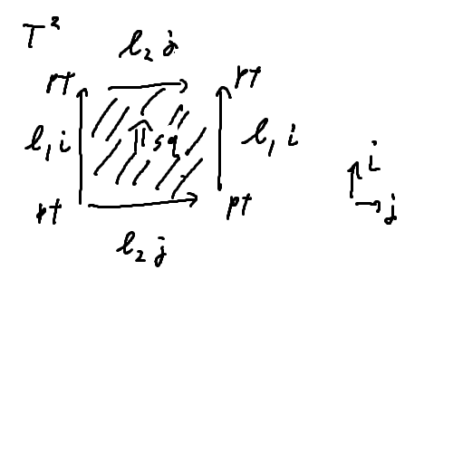

{-# OPTIONS --cubical --safe #-}
open import Cubical.Foundations.Prelude
module 6-03_cubical where
data _×_ {ℓ} (A B : Set ℓ) : Set ℓ where
_,_ : A → B → A × B
Σ' : ∀ {ℓ} (A : Set ℓ) (B : A → Set ℓ) → Set ℓ
Σ' = Σ
syntax Σ' B (λ x → E-x) = Σ x ꞉ B , E-x
module _ {ℓ} where
id : {A : Set ℓ} → (A → A)
id a = a
_∘_ : {A B C : Set ℓ} → (B → C) → (A → B) → (A → C)
(g ∘ f) a = g (f a)
ap : {A B : Set ℓ} (f : A → B) {a b : A} → a ≡ b → f a ≡ f b
ap f p = λ i → f (p i)
module _ {A B : Set ℓ} where
_~_ : (f g : A → B) → Set ℓ
_~_ f g = (x : A) → f x ≡ g x
infix 4 _~_
funext : {f g : A → B} → (f ~ g) → (f ≡ g)
funext = λ H i x → H x i
module _ {A B : Set ℓ} where
isheq : (f : A → B) → Set ℓ
isheq f = Σ g ꞉ (B → A) , Σ h ꞉ (B → A) , ((f ∘ g ~ id) × (h ∘ f ~ id))
_≃_ : (A B : Set ℓ) → Set ℓ
A ≃ B = Σ f ꞉ (A → B) , isheq f
data Unit : Set ℓ where
star : Unit
data Interval : Set ℓ where
I0 I1 : Interval
seg : I0 ≡ I1
constI0 : Interval → Interval
constI0 x = I0
constI0~id : constI0 ~ id
constI0~id I0 = refl
constI0~id I1 = seg
constI0~id (seg i) = λ j → seg (i ∧ j)
_ : Unit ≃ Interval
_ = (λ x → I0) , (λ i → star) , (λ i → star) , constI0~id , λ {star → refl}
data Cone (A : Set ℓ) : Set ℓ where
apex : Cone A
base : A → Cone A
generatrix : (x : A) → apex ≡ base x
module _ {A : Set ℓ} where
constapex : Cone A → Cone A
constapex x = apex
constapex~id : constapex ~ id
constapex~id apex = refl
constapex~id (base x) = generatrix x
constapex~id (generatrix x i) = λ j → generatrix x (i ∧ j)
Unit≃Cone : Unit ≃ Cone A
Unit≃Cone = (λ x → apex) , (λ c → star) , (λ c → star) , constapex~id , λ {star → refl}
data S¹ : Set ℓ where
base : S¹
loop : base ≡ base
D² = Cone S¹
_ : Unit ≃ D²
_ = Unit≃Cone
data T² : Set ℓ where
pt : T²
l1 l2 : pt ≡ pt
sq : PathP (λ i → l1 i ≡ l1 i) l2 l2
t2c : T² → S¹ × S¹
t2c pt = base , base
t2c (l1 i) = loop i , base
t2c (l2 i) = base , loop i
t2c (sq i j) = loop i , loop j

c2t : S¹ × S¹ → T²
c2t (base , base) = pt
c2t (loop i , base) = l1 i
c2t (base , loop i) = l2 i
c2t (loop i , loop j) = sq i j
c2t-t2c : c2t ∘ t2c ~ id
c2t-t2c pt = refl
c2t-t2c (l1 i) = refl
c2t-t2c (l2 i) = refl
c2t-t2c (sq i j) = refl
t2c-c2t : t2c ∘ c2t ~ id
t2c-c2t (base , base) = refl
t2c-c2t (base , loop i) = refl
t2c-c2t (loop i , base) = refl
t2c-c2t (loop i , loop j) = refl
T²≃S¹×S¹ : T² ≃ (S¹ × S¹)
T²≃S¹×S¹ = t2c , c2t , c2t , t2c-c2t , c2t-t2c
data K² : Set ℓ where
pt : K²
l1 l2 : pt ≡ pt
sq : PathP (λ i → l1 (~ i) ≡ l1 i) l2 l2
data RP² : Set ℓ where
pt : RP²
l1 l2 : pt ≡ pt
sq : PathP (λ i → l1 (~ i) ≡ l1 i) l2 (sym l2)